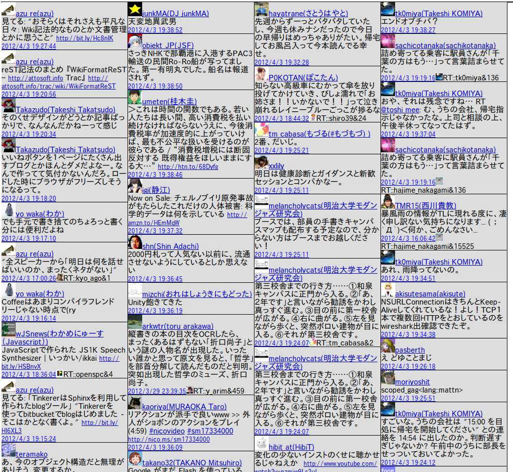

スカンディナヴィア半島3について
スカンディナヴィア半島3はWebブラウザ上で動くだらっとTwitterのListやTLを俯瞰するクライアントです。
認証済みの方はこちらからどうぞ
- Webクライアントなため、OS依存になりません
- またサーバー内部でデータを保持することもないです(クライアントサイドで完結する)
- OAuthが若干手間ですがブラウザ毎に1度だけ、コピペでできます
- 動作確認は Chrome 18, Opera 11.62 で確認してます。たぶんFirefoxでも動きます。IE？知りません
- ちなみにPublicリストをとってくるだけとかSearchするだけならOAuthしなくても使えます(警告がウザいかもだけど)
- 作成者::@altnight
さっそく認証しよう
認証する(2ステップ必要です )

注意点とか
- エラー処理がてきとうなので微妙な挙動をします
- 基本的にオレオレクライアントなので苦情は受け付けません。感謝なら受け取ります
- 仕様::DMは読めるけど返信できません。続きはWebで！
- 仕様::フォローしていない人からまわってきた公式RTは取り消せません。続きはWebで！
- 仕様::たまに読み込み順番とかよくわかんないことになってるけど、仕様です。そんなに高機能なのが使いたいならTweetDeckがあるよ？
- 仕様::技術不足により普通のTwitterクライアントみたいに継ぎ足して表示できませんでした。さーせん。そんなに高機能なのが使いたいならTweetDeckがあるよ？
- かゆいところに手が届かないところがあるけれど、仕様です。そんなに高機能なのが使いたかったらTweetDeckがあるよ？
- 基本的にTweetDeck for Chromeが完璧過ぎるからそっち使えばいいと思うよ？